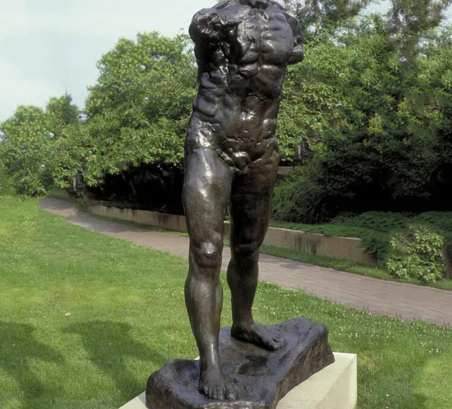

Auguste Rodin


I decided to organize the page by first putting my name, followed by
the title of the section, and then the names of the artists, then
their image, and lastly the description.
I chose to hyperlink both
the name and the image for each artist, which I like the feel of. Though,
I first made the mistake of not making my hyperlinks open a new tab when
clicked, and found out how very annoying that can be when trying to
go back and forth on the website. Thankfully, they all worked, but the
user experience was certainly lacking.
An interesting connection between all of
the artists that I had not considered before was how though they
all had different mediums, they all found ways to express seemingly
indescribable emotions that deeply resonated with their audiences.
I like the setup of the information within the website, but am not
a fan of how large the images are, and would like the different
sections to be within their own background shapes, with their own
colors to identify them.